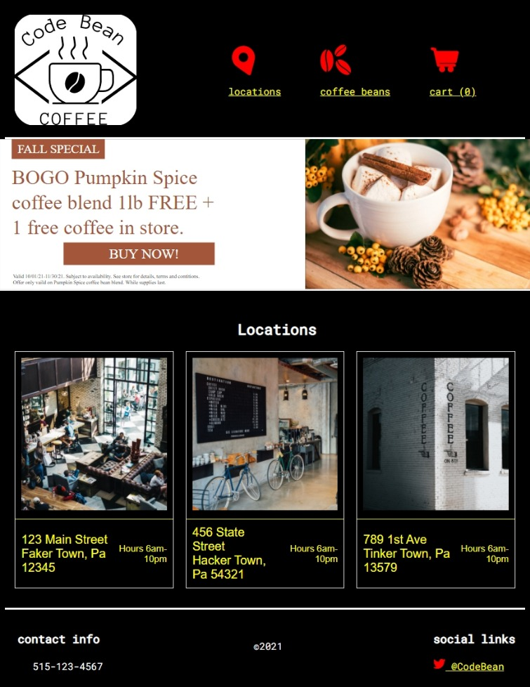

Accessible SVGs
Heather Migliorisi
Disclaimer: Everything presented here is my own and does not reflect the views of my employer.
What are SVGs?
Scalable Vector Graphic (SVG) is a generalized graphics markup language
- icons
- complex images
- data visualizations
- animated pictures
- interactive applications
How does web content work with assitive technology?
Accessibility Tree
Image from WICG AOM
Native Element
 Image from WICG AOM
Image from WICG AOM
ARIA - Accessible Rich Internet Applications
- role (checkbox)
- state (checked)
- property (e.g. aria-label="label")
Developer Tools
Quick Detour
Examples tested with latest versions of:
NVDA
- Chrome
- Firefox
JAWS
- Chrome
- Edge
VoiceOver
- Safari
- iOS Safari
Most common browser and screen reader combos: Webaim screen reader survey #9
Real World Examples
The Logo
SVG as <img> src - Unlinked
SVG as <img> src - zombie Safari bug
Zombie Safari bugSVG as <img> src - linked
Inline SVG - unlinked
Inline SVG - unlinked - fixed
Inline SVG - unlinked - title and description
Inline SVG - unlinked - title and description - fixed
Inline SVG - linked - aria-label
Inline SVG - Animation
Inline SVG - Animation
Next Example: Icons
Icon - decorative - linked, not linked and button
Icon - content - not linked
Icon - content - linked
Icon - content - linked
Icon - content - linked + text
Icon - content - button
Final Example
<Text> is Traversable!!!
Semantics
:focus Styles
Semantics - continued
Hide the Decorative Image
Final Result
NVDA + Firefox
Forgetting Something
SVGs and High Contrast Mode
Add a shape to the background
Media queries and currentColor
currentColor
Use System Colors
System ColorsTake Aways...
Take aways:
- hide decorative images from screen readers
aria-hidden="true" - provide meaningful alternative text for content images
- add roles to elements to ensure they map properly to the Accessibility API
- provide :focus styles for actionable elements
- make sure images are not lost in high contrast
Test early, test often!
- with various screen readers + browsers
- different contrast modes
- keyboard navigation
- with real users
Finally
Resources and Further Reading
- Accessible SVGs, by Heather Migliorisi (2016, updated 2021)
- Contextually Marking up accessible images and SVGs , by Scott O'Hara (2019, updated 2021)
- Accessible Icon Buttons, by Sara Soueidan (2019)
- WAI Tutorials: An alt Decision Tree, (2017)
- Quick Tips for High Contrast Mode , by Sarah Higley (2020)
- CurrentColor SVG in forced colors modes, by Melanie Richards (2021)
- Designing With Reduced Motion For Motion Sensitivities, by Val Head (2020)